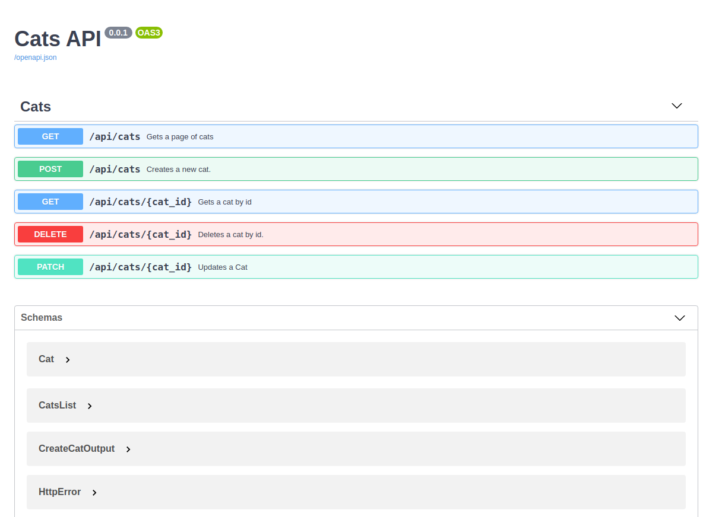
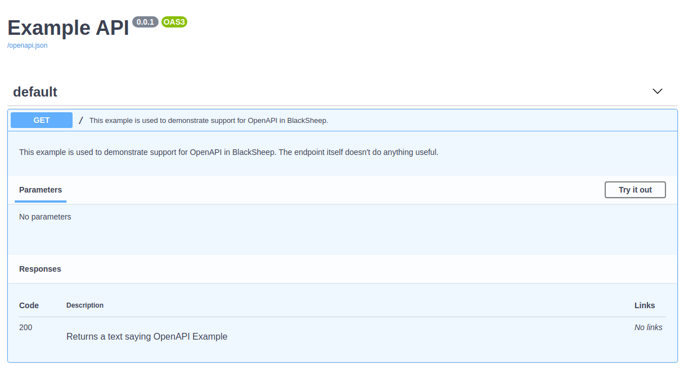
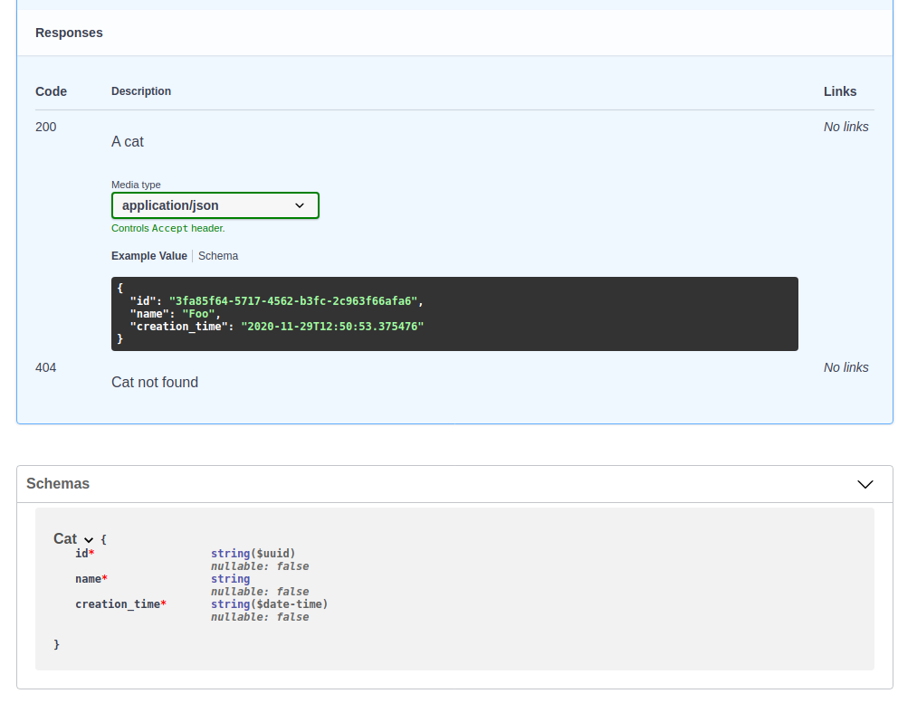

OpenAPI Documentation¶
BlackSheep implements automatic generation of OpenAPI Documentation for most common scenarios, and provides methods to enrich the documentation with details. This page describes the following:
- An introduction to OpenAPI Documentation.
- Built-in support for OpenAPI Documentation.
- How to document endpoints.
- How to handle common responses.
- Expose the documentation for anonymous access.
- Support for ReDoc UI.
- How to implement a custom
UIProvider.
Introduction to OpenAPI Documentation¶
Citing from the Swagger website, at the time of this writing:
The OpenAPI Specification (OAS) defines a standard {...} interface to RESTful APIs which allows both humans and computers to discover and understand the capabilities of the service {...}.
An OpenAPI definition can then be used by documentation generation tools to display the API, code generation tools to generate servers and clients in various programming languages, testing tools, and many other use cases.
Since a web application inherently knows the paths it handles, and a certain amount of metadata can be inferred from the source code, BlackSheep provides automatic generation of OpenAPI documentation. It also offers an API to enhance the documentation with additional information that cannot be inferred from the source code.
If you followed the Getting started: MVC tutorial,
the project template is preconfigured to include an example of OpenAPI
documentation and to expose a Swagger UI at the /docs path.

Built-in support for OpenAPI Documentation¶
The following piece of code describes a minimal set-up to enable generation of OpenAPI Documentation and exposing a Swagger UI in BlackSheep:
from dataclasses import dataclass
from blacksheep import Application, get
from blacksheep.server.openapi.v3 import OpenAPIHandler
from openapidocs.v3 import Info
app = Application()
docs.bind_app(app)
@dataclass
class Foo:
foo: str
@get("/foo")
async def get_foo() -> Foo:
return Foo("Hello!")
If you start this application and navigate to its /docs route, you will see
a Swagger UI like this:

In this example, BlackSheep generates this specification file in JSON format,
at /openapi.json path:
{
"openapi": "3.0.3",
"title": "Example API",
"version": "0.0.1"
},
"paths": {
"/foo": {
"get": {
"responses": {
"200": {
"description": "Success response",
"content": {
"application/json": {
"schema": {
"$ref": "#/components/schemas/Foo"
}
}
}
}
},
"operationId": "get_foo"
}
}
},
"servers": [],
"components": {
"schemas": {
"Foo": {
"type": "object",
"required": [
"foo"
],
"properties": {
"foo": {
"type": "string",
"nullable": false
}
}
}
}
}
}
Notice how the Foo component schema is automatically documented. BlackSheep
supports both @dataclass and Pydantic models for the automatic generation
of documentation, however support for Pydantic is limited.
And also YAML format at /openapi.yaml path:
openapi: 3.0.3
title: Example API
version: 0.0.1
paths:
/foo:
get:
responses:
'200':
description: Success response
content:
application/json:
schema:
$ref: '#/components/schemas/Foo'
operationId: get_foo
servers: []
components:
schemas:
Foo:
type: object
required:
- foo
properties:
foo:
type: string
nullable: false
To provide more details for api routes, decorate request handlers using the
instance of OpenAPIHandler as a decorator:
@docs(responses={200: "Returns a text saying OpenAPI Example"})
@get("/")
def home():
return "OpenAPI Example"
After this change, the specification file includes the new information:
openapi: 3.0.3
title: Example API
version: 0.0.1
paths:
/:
get:
responses:
'200':
description: Returns a text saying OpenAPI Example
operationId: home
components: {}
Adding description and summary¶
An endpoint description can be specified either using a docstring:
@docs(responses={200: "Returns a text saying OpenAPI Example"})
@get("/")
async def home():
"""
This example is used to demonstrate support for OpenAPI in BlackSheep.
The endpoint itself doesn't do anything useful.
"""
return "OpenAPI Example"
Or in the @docs decorator:
@docs(
summary="This example is used to demonstrate support for OpenAPI in BlackSheep.",
description="The endpoint itself doesn't do anything useful.",
responses={200: "Returns a text saying OpenAPI Example"},
)
@get("/")
async def home():
return "OpenAPI Example"
When using docstring, the first line of the docstring is used as the summary,
and the whole docstring as the description.

Most of the BlackSheep code base is typed using the `typing` module,
thus IDEs and text editors like Visual Studio Code and PyCharm can provide
user's friendly hints for code completion (see the screenshot below).

Ignoring endpoints¶
To exclude certain endpoints from the API documentation, use @docs.ignore():
@docs.ignore()
@get("/hidden-from-docs")
async def hidden_endpoint():
return "This endpoint won't appear in documentation"
Document only certain routes¶
To document only certain routes, use an include function like in the example below. For example, to include only those routes that start with "/api":
# include only endpoints whose path starts with "/api/"
docs.include = lambda path, _: path.startswith("/api/")
Documenting response examples¶
The following example shows how to describe examples for responses:
from dataclasses import dataclass
from datetime import datetime
from uuid import UUID
from blacksheep import Application, json
from blacksheep.server.openapi.common import ContentInfo, ResponseExample, ResponseInfo
from blacksheep.server.openapi.v3 import OpenAPIHandler
from openapidocs.v3 import Info
app = Application()
docs.bind_app(app)
@dataclass
class Cat:
id: UUID
name: str
creation_time: datetime
@docs(
summary="Gets a cat by id",
description="""A sample API that uses a pet store as an
example to demonstrate features in the OpenAPI 3 specification""",
responses={
200: ResponseInfo(
"A cat",
content=[
ContentInfo(
Cat,
examples=[
ResponseExample(
Cat(
id=UUID("3fa85f64-5717-4562-b3fc-2c963f66afa6"),
name="Foo",
creation_time=datetime.now(),
)
)
],
)
],
),
404: "Cat not found",
},
)
@get("/api/cats/{cat_id}")
def get_cat_by_id(cat_id: UUID):
cat = ... # TODO: implement the logic that fetches a cat by id
return json(cat)
If the code seems excessively verbose, consider that OpenAPI specification is designed to support documenting responses with different content types (e.g. JSON, XML, etc.) and having examples for each content type. Writing the documentation by hand would be much more time consuming!
BlackSheep automatically generates component schemas by type (in this example,
Cat) and reuses them in all API endpoints that use them:

Avoid code pollution using EndpointDocs¶
If you are familiar with other libraries that produce OpenAPI Documentation and you consider the example above, you might notice that adding OpenAPI details to request handlers can pollute the source code and distract the programmer from the actual request handlers' logic.
BlackSheep provides a way to avoid polluting the source code and keep the code
for OpenAPI in dedicated files. Use the blacksheep.server.openapi.common.EndpointDocs
class to define documentation in dedicated files and keep your request handlers
code clean:
from apidocs.cats import get_cat_docs
@docs(get_cat_docs)
@get("/api/cats/{cat_id}")
def get_cat_by_id(cat_id: UUID):
cat = ... # TODO: implement the logic that fetches a cat by id
return json(cat)
To see a complete example, refer to the source code of the MVC project
template, and see how
documentation is organized and configured (in app.docs, app.controllers.docs).
Deprecating an API¶
To mark an endpoint as deprecated, use @docs.deprecated():
@docs.deprecated()
@get("/some-deprecated-api")
async def deprecated_endpoint():
return "This endpoint is deprecated"
Altering the specification upon creation¶
To alter the specification file upon creation, define a subclass of
OpenAPIHandler that overrides on_docs_generated method.
from blacksheep import Application, json
from blacksheep.server.openapi.v3 import OpenAPIHandler
from openapidocs.v3 import Info, OpenAPI, Server
app = Application()
class MyOpenAPIHandler(OpenAPIHandler):
def on_docs_generated(self, docs: OpenAPI) -> None:
docs.servers = [
Server(url="https://foo-example.org"),
Server(url="https://test.foo-example.org"),
]
docs.bind_app(app)
Handling common responses¶
APIs often implement a common way to handle failures, to provide clients with
details for web requests that cannot be completed successfully. For example, an API might return a response body like the following, in case of a bad request for a certain endpoint:
Such response body can be handled using a dataclass:
Common responses can be documented this way:
from openapidocs.v3 import MediaType, Response as ResponseDoc, Schema
error_info = docs.register_schema_for_type(ErrorInfo)
docs.common_responses = {
400: ResponseDoc(
"Bad request",
content={
"application/json": MediaType(
schema=Schema(
any_of=[error_info],
example=SafeException(error="Invalid argument", code=1001),
)
)
},
),
401: ResponseDoc(
"Unauthorized",
content={
"application/json": MediaType(
schema=Schema(
any_of=[error_info],
example=SafeException(
error="The user is not authorized", code=3
),
)
)
},
),
}
Support for generics¶
The generation of OpenAPI Documentation supports generic types. Consider the following example:
- A common use case is implementing an API that returns a paginated subset of elements, often based on filters (e.g., textual search).
- Clients need to know the total count of items matching the filters to display the total number of items and calculate the number of pages required to show all results (depending on the page size).
- In such scenarios, using a
Generictype is an effective solution, as many kinds of objects can be paginated.
Example of generic class definition
from dataclasses import dataclass
from typing import List, Generic, TypeVar
T = TypeVar("T")
@dataclass
class PaginatedSet(Generic[T]):
items: List[T]
total: int
Full example illustrating OpenAPI Documentation for generics:
In the example below, the generic type is handled properly and produces the following OpenAPI Documentation:
Generic types names.
Generic types, expressed in Python using GenericType[T], are
represented with GenericTypeOfT to respect OpenAPI specification, saying
that $ref values must be RFC3986-compliant percent-encoded URIs.
A generic type with more arguments, like Foo[T, U, X] gets represented with
FooOfTAndUAndX.
Describing parameters¶
It is possible to describe parameters explicitly using docstrings.
Documenting parameters explicitly¶
To document parameters explicitly, use the @docs like in the following
example (elaborating on the previous example about generics):
from blacksheep.server.openapi.common import ParameterInfo
app = Application()
# enable OpenAPI Documentation
docs.bind_app(app)
@router.get("/api/orders")
@docs(
parameters={
"page": ParameterInfo(description="Page number"),
"page_size": ParameterInfo(
description="The number of items to display per page"
),
"search": ParameterInfo(description="Optional text search"),
},
)
async def get_orders(
page: FromQuery[int] = FromQuery(1),
page_size: FromQuery[int] = FromQuery(30),
search: FromQuery[str] = FromQuery(""),
) -> PaginatedSet[Order]:
"""
Returns a paginated set of orders.
"""
Documenting parameters using docstrings¶
BlackSheep supports documenting parameters using docstrings, and the following styles are supported: Epytext, ReStructuredText, NumpyDoc. The following sections show the previous example re-written to use docstrings.
@router.get("/api/orders")
async def get_orders(
page: FromQuery[int] = FromQuery(1),
page_size: FromQuery[int] = FromQuery(30),
search: FromQuery[str] = FromQuery(""),
) -> PaginatedSet[Order]:
"""
Returns a paginated set of orders.
@param page: Page number
@param page_size: The number of items to display per page
@param search: Optional text search
"""
@router.get("/api/orders")
async def get_orders(
page: FromQuery[int] = FromQuery(1),
page_size: FromQuery[int] = FromQuery(30),
search: FromQuery[str] = FromQuery(""),
) -> PaginatedSet[Order]:
"""
Returns a paginated set of orders.
:param page: Page number
:param page_size: The number of items to display per page
:param search: Optional text search
"""
@router.get("/api/orders")
async def get_orders(
page: FromQuery[int] = FromQuery(1),
page_size: FromQuery[int] = FromQuery(30),
search: FromQuery[str] = FromQuery(""),
) -> PaginatedSet[Order]:
"""
Returns a paginated set of orders.
Parameters
----------
page : Page number
page_size : The number of items to display per page
search : Optional text search
"""
The logic that parses docstrings can also extract types information, but this
is not documented because the recommended way is to use type annotations.
Refer to the file test_openapi_docstrings.py for more examples on the
information that can be extracted from docstrings.
Anonymous access¶
If the server uses a default authorization policy that requires an
authenticated user, it is still possible to make the OpenAPI Documentation
endpoint available for anonymous access, using the anonymous_access
parameter:
from blacksheep.server.openapi.v3 import OpenAPIHandler
from openapidocs.v3 import Info
docs = OpenAPIHandler(
)
# include only endpoints whose path starts with "/api/"
docs.include = lambda path, _: path.startswith("/api/")
Support for ReDoc UI¶
BlackSheep supports ReDoc UI, although
this is disabled by default. It is also possible to implement custom UIs for
the documentation endpoints, using the ui_providers property of the
OpenAPIHandler class, and implementing a custom UIProvider.
from blacksheep.server.openapi.v3 import OpenAPIHandler
from blacksheep.server.openapi.ui import ReDocUIProvider
from openapidocs.v3 import Info
docs = OpenAPIHandler(
)
docs.ui_providers.append(ReDocUIProvider())
# include only endpoints whose path starts with "/api/"
docs.include = lambda path, _: path.startswith("/api/")
How to implement a custom UIProvider¶
The BlackSheep package includes some static files to offer a good user experience in some circumstances. These include HTML pages used when enabling Swagger UI or ReDoc UI.
To control those pages, for example, to alter the HTML structure or use different sources for JavaScript and CSS files (which by the way could be the BlackSheep application serving the OpenAPI specification files), it is recommended to:
- define a custom implementation of
UIProvider - maintain the desired HTML file
Example:
from dataclasses import dataclass
from pathlib import Path
from blacksheep import Application
from blacksheep.server.openapi.v3 import OpenAPIHandler
from blacksheep.server.openapi.ui import SwaggerUIProvider, UIOptions
from openapidocs.v3 import Info
app = Application()
class CustomUIProvider(SwaggerUIProvider):
def get_openapi_ui_html(self, options: UIOptions) -> str:
_template = Path("example.html").read_text()
return _template.replace("{options.spec_url}", options.spec_url)
# Set the UI provider as desired:
docs.ui_providers = [CustomUIProvider()]
docs.bind_app(app)
@dataclass
class Foo:
foo: str
@route("/foo")
async def get_foo() -> Foo:
return Foo("Hello!")
example.html:
<!DOCTYPE html>
<html>
<head>
<title>My desired title</title>
<link rel="icon" href="/favicon.png"/>
<link type="text/css" rel="stylesheet" href="https://cdnjs.cloudflare.com/ajax/libs/swagger-ui/5.10.0/swagger-ui.css">
</head>
<body>
<div id="swagger-ui"></div>
<script src="https://cdnjs.cloudflare.com/ajax/libs/swagger-ui/5.10.0/swagger-ui-bundle.min.js"></script>
<script>
const ui = SwaggerUIBundle({
url: '{options.spec_url}',
oauth2RedirectUrl: window.location.origin + '/docs/oauth2-redirect',
dom_id: '#swagger-ui',
presets: [
SwaggerUIBundle.presets.apis,
SwaggerUIBundle.SwaggerUIStandalonePreset
],
layout: "BaseLayout",
deepLinking: true,
showExtensions: true,
showCommonExtensions: true
})
</script>
</body>
</html>
Python code highlight:
+from blacksheep.server.openapi.ui import SwaggerUIProvider, UIOptions
from openapidocs.v3 import Info
app = Application()
+class CustomUIProvider(SwaggerUIProvider):
+ def get_openapi_ui_html(self, options: UIOptions) -> str:
+ _template = Path("example.html").read_text()
+ return _template.replace("{options.spec_url}", options.spec_url)
# Set the UI provider as desired:
+docs.ui_providers = [CustomUIProvider()]
docs.bind_app(app)
Changing operations ids¶
When OpenAPI Documentation is generated, operation ids are obtained from the name of the Python function definitions.
For example, having a get_foo request handler generates an object having
operationId equal to "get_foo":
To change how operationId is generated for endpoints, define a custom type
of OpenAPIHandler that overrides the get_operation_id method, to produce
the desired result:
class CustomOpenAPIHandler(OpenAPIHandler):
def get_operation_id(self, docs: Optional[EndpointDocs], handler) -> str:
return handler.__name__.capitalize().replace("_", " ")
For more details¶
For more details on the OpenAPI specification and to understand some details such as security settings, refer to the official swagger.io website, and the dedicated library to generate the specification file: essentials-openapi.
Last modified on: 2025-04-22 08:29:25